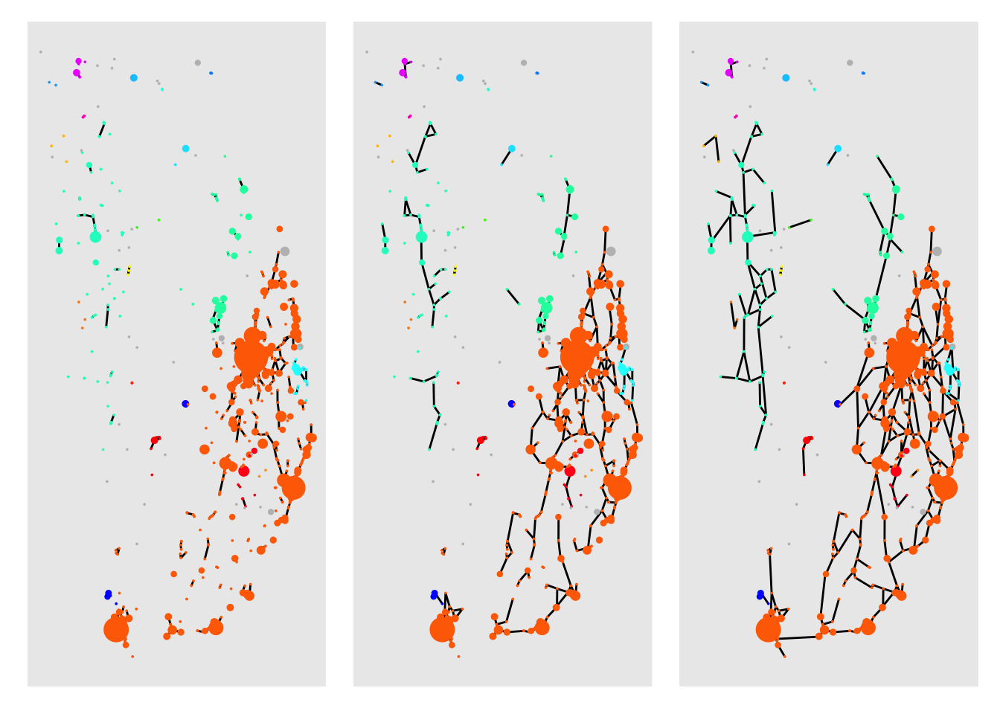
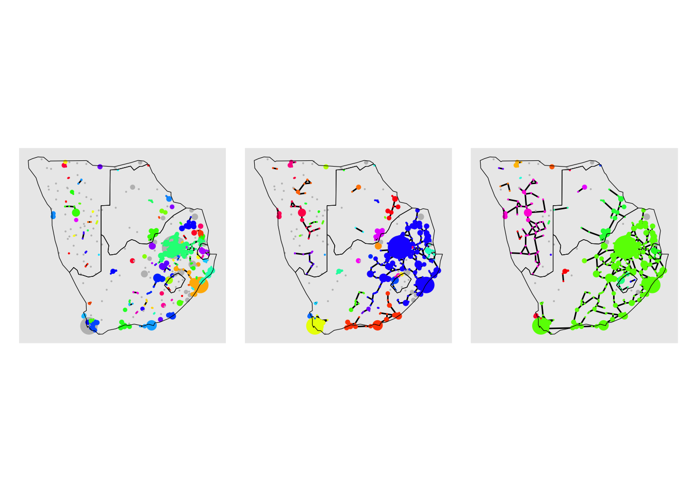
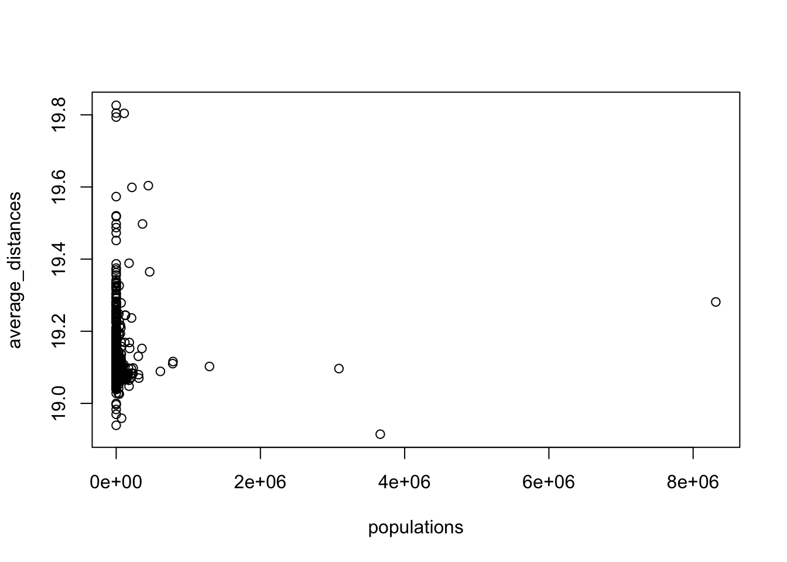

# Load required packages
library(igraph) # for network analysis
library(ggplot2)
library(ggraph)
library(patchwork)
library(tidygraph)
library(RColorBrewer)
library(rnaturalearth)
library(sf)4 Percolation theory
4.1 Dependencies
We first load all the libraries required for this section.
4.2 Introduction
The term percolation normally refers to the process whereby a fluid moves slowly through a porous material, for example, the percolation of rain water through rocks gives rise to aquifers. The study and modelling of this infiltration process in physics, chemistry and material science is known as percolation theory. If you think about it, a rock can be modelled as a three-dimensional lattice (if the rock was cube-shaped, this lattice would be like a Rubik cube but instead of being \(3 \times 3\times 3\), it is \(n\times n \times n\)). Then, the pores in the rock would be represented by “open sites” in this lattice (this would correspond to missing pieces in the Rubik cube) and the bits of the rock where there is material and therefore, no chance for the water to go through, would be represented by “closed sites” (this would correspond to pieces in the Rubik cube that are actually present). A typical question in percolation theory would then be as follows. If sites may be open with probability \(p\) or closed with probability \(1-p\) and these probabilities are assumed to be independent for each site, what is the probability that the water can go through the top to the bottom of the rock for a given value of \(p\)?
In recent decades, the mathematical study of percolation has been applied in a more general way, to understand the behavior of connected clusters or pathways in any system that can be modelled as a lattice or as a network. While the formulation of the percolation models varies slightly from lattices to networks, it follows the same principles. For example, let’s consider the spread of a certain pandemic, where contagion between two humans may take place with probability \(p\) if an infected individual spends more than 10 minutes at less than 2 meters away from a healthy one. Then, we can think of the pandemic as a fluid moving slowly, but instead of going through a porous rock, it goes through a social network of people. The people can be modelled as the nodes of the social network, and edges are present between two individuals if they spend long enough in close physical contact. Then, each edge or connection has an associated probability of contagion \(p\). Applying percolation theory, we could answer the question of “what are the chances that the pandemic makes its way from city A to city B given the structure of the network and the fact that the probability of contagion is \(p\)?”
Percolation theory can therefore be used in a variety of contexts to better understand the properties of a system characterised by the connections between its components. Here, we use percolation models to improve our understanding of the structure and resilience of the African road network.
As before, we start by loading the data corresponding to the nodes and edges of the African road network:
# Read edge and node data from URLs
df_edges <- read.csv("https://raw.githubusercontent.com/rafaelprietocuriel/AfricanUrbanNetwork/main/AfricaNetworkEdges.csv")
df_nodes <- read.csv("https://raw.githubusercontent.com/rafaelprietocuriel/AfricanUrbanNetwork/main/AfricaNetworkNodes.csv", encoding='UTF-8')In order to ensure timely completion of this workshop, we have decided to utilise a subset of the African network, specifically focusing on nodes from the South region. This adjustment is necessary as running the code on the entire network would exceed the allocated time frame. However, you are encouraged to explore running the code on the complete network at your own convenience.
We start by selecting the nodes belonging to the South region. This can be easily done with the subset() function.
# Filter the data frame df_nodes to only include rows where the 'Region' column is equal to "South"
df_nodes <- subset(df_nodes, Region == "South")Similarly, we can select the only the edges where both extrema are nodes belongin to the South region.
# Filter the data frame df_edges to only include rows where the 'from' column is in the list of Agglomeration_ID values from df_nodes
df_edges <- subset(df_edges, from %in% df_nodes$Agglomeration_ID)
# Filter the data frame df_edges to only include rows where the 'to' column is in the list of Agglomeration_ID values from df_nodes
df_edges <- subset(df_edges, to %in% df_nodes$Agglomeration_ID)And like before, we can create an undirected graph from the redifined data frames of nodes and edges.
# Create an undirected graph 'G' from a data frame 'df_edges' representing edges and a data frame 'df_nodes' representing vertices
G <- graph_from_data_frame(d = df_edges,
vertices = df_nodes,
directed = FALSE)We can visualise this sub network by running the code below.
# Assign a 'size' attribute to vertices in graph 'G' based on a function of population data
V(G)$size <- 0.5*(V(G)$Pop2015/10000)^0.4
# Plot the graph 'G' with specific visual attributes
plot(G,
vertex.size = V(G)$size, # Set vertex size based on the 'size' attribute
edge.arrow.size = 0.15, # Set arrow size for directed edges
edge.arrow.width = 0.2, # Set arrow width for directed edges
edge.curved = 0.1, # Set edge curvature
edge.width = 1, # Set edge width
edge.color = "gray90", # Set edge color
vertex.color = "red", # Set vertex color
vertex.frame.color = "black", # Set vertex frame (border) color
vertex.frame.width = 0.2, # Set vertex frame (border) width
vertex.label = " ", # Set vertex labels to empty
vertex.label.color = "black", # Set vertex label color
vertex.label.cex = 0.65) # Set vertex label size 
V(G)$size <- 0.5*(V(G)$Pop2015/10000)^0.4
custom_layout <- data.frame(
name = V(G)$name, # Node names from the graph
x = df_nodes$x, # Custom x-coordinates
y = df_nodes$y # Custom y-coordinates
)
# Plot the graph 'G_' with specific visual attributes
plotG <- ggraph(as_tbl_graph(G), custom_layout) +
geom_edge_link() +
geom_node_point(aes(size = V(G)$size), color = "red") +
scale_color_identity() +
theme(legend.position = "none")
plotGWarning: Using the `size` aesthetic in this geom was deprecated in ggplot2 3.4.0.
ℹ Please use `linewidth` in the `default_aes` field and elsewhere instead.world <- ne_download(scale = "small", category = "cultural", type = "admin_0_countries",
returnclass = "sf")
target_countries <- c("Botswana", "eSwatini", "Lesotho", "Namibia", "South Africa")
world_subset <- world[world$SOVEREIGNT %in% target_countries, ]The countries belonging to the South section are Botswana, eSwatini, Lesotho, Namibia, South Africa. To give more geographical context to the above visualisation, we will add the outlines of these countries.
4.3 Modelling community formation in the African road network
At the end of the previous session, we used the fast greedy algorithm to detect communities based on the topology of the African road network. We used an R implementation of the fast greedy algorithm through the built-in function cluter_fast_greedy(). While a built-in function gives us results in a very straightforward way, it also makes the process less transparent. In this section, we implement a percolation theory approach to model the formation of communities of nodes (cities) as the connectivity properties of the network are varied.
# Create a list to store the plots
plots_list <- list()
i=1
# Iterate over thresholds
for (j in seq(60, 180, 60)) {
df_edges_perco <- subset(df_edges, timeUCB < j)
G_perco <- graph_from_data_frame(d = df_edges_perco,
vertices = df_nodes,
directed = FALSE)
# Find connected components
component_info <- components(G_perco)
# Create a data frame with node names and corresponding colors
df_nodes$component_ID = component_info$membership
# Define a color palette for connected components (replace with your own colors)
component_colors <- sample(rainbow(component_info$no), replace=FALSE)
# Assign colors to nodes based on connected component
node_colors <- component_colors[component_info$membership]
# Create a data frame with node names and corresponding colors
df_nodes$color = node_colors
df_nodes$degree = degree(G_perco)
df_nodes$color[df_nodes$degree == 0] <- "gray"
V(G_perco)$size <- 0.5*(V(G_perco)$Pop2015/10000)^0.4
custom_layout <- data.frame(
name = V(G_perco)$name, # Node names from the graph
x = df_nodes$x, # Custom x-coordinates
y = df_nodes$y # Custom y-coordinates
)
# Plot the graph 'G_' with specific visual attributes
plot <- ggraph(as_tbl_graph(G_perco), custom_layout) +
geom_edge_link() +
geom_node_point(aes(color = factor(df_nodes$color)),
size = V(G_perco)$size) +
scale_color_identity() +
theme(legend.position = "none")
# Add the plot to the list
plots_list[[i]] <- plot
i <- i+1
}plots_list %>%
wrap_plots(nrow = 1) 
df_nodes_perco_60 <- df_nodes
df_edges_perco_60 <- subset(df_edges, timeUCB < 60)
G_perco_60 <- graph_from_data_frame(d = df_edges_perco_60,
vertices = df_nodes_perco_60,
directed = FALSE)
# Find connected components
component_info_60 <- components(G_perco_60)
# Create a data frame with node names and corresponding colors
df_nodes_perco_60$component_ID = component_info_60$membership# Define a color palette for connected components (replace with your own colors)
component_colors_60 <- sample(rainbow(component_info_60$no), replace=FALSE)
# Assign colors to nodes based on connected component
node_colors_60 <- component_colors_60[component_info_60$membership]
# Create a data frame with node names and corresponding colors
df_nodes_perco_60$color = node_colors_60
df_nodes_perco_60$degree = degree(G_perco_60)
df_nodes_perco_60$color[df_nodes_perco_60$degree == 0] <- "gray"
V(G_perco_60)$size <- 0.5*(V(G_perco_60)$Pop2015/10000)^0.4
custom_layout <- data.frame(
name = V(G_perco_60)$name, # Node names from the graph
x = df_nodes_perco_60$x, # Custom x-coordinates
y = df_nodes_perco_60$y # Custom y-coordinates
)
# Plot the graph 'G_' with specific visual attributes
plot_60 <- ggraph(as_tbl_graph(G_perco_60), custom_layout) +
geom_edge_link() +
geom_node_point(aes(color = factor(df_nodes_perco_60$color)),
size = V(G_perco_60)$size) +
scale_color_identity() +
theme(legend.position = "none") +
geom_sf(data = world_subset, fill = NA, color = "black")df_nodes_perco_120 <- df_nodes
df_edges_perco_120 <- subset(df_edges, timeUCB < 120)
G_perco_120 <- graph_from_data_frame(d = df_edges_perco_120,
vertices = df_nodes_perco_120,
directed = FALSE)
# Find connected components
component_info_120 <- components(G_perco_120)
# Create a data frame with node names and corresponding colors
df_nodes_perco_120$component_ID = component_info_120$membership# Define a color palette for connected components (replace with your own colors)
component_colors_120 <- sample(rainbow(component_info_120$no), replace=FALSE)
# Assign colors to nodes based on connected component
node_colors_120 <- component_colors_120[component_info_120$membership]
# Create a data frame with node names and corresponding colors
df_nodes_perco_120$color = node_colors_120
df_nodes_perco_120$degree = degree(G_perco_120)
df_nodes_perco_120$color[df_nodes_perco_120$degree == 0] <- "gray"
V(G_perco_120)$size <- 0.5*(V(G_perco_120)$Pop2015/10000)^0.4
custom_layout <- data.frame(
name = V(G_perco_120)$name, # Node names from the graph
x = df_nodes_perco_120$x, # Custom x-coordinates
y = df_nodes_perco_120$y # Custom y-coordinates
)
# Plot the graph 'G_' with specific visual attributes
plot_120 <- ggraph(as_tbl_graph(G_perco_120), custom_layout) +
geom_edge_link() +
geom_node_point(aes(color = factor(df_nodes_perco_120$color)),
size = V(G_perco_120)$size) +
scale_color_identity() +
theme(legend.position = "none") +
geom_sf(data = world_subset, fill = NA, color = "black")df_nodes_perco_180 <- df_nodes
df_edges_perco_180 <- subset(df_edges, timeUCB < 180)
G_perco_180 <- graph_from_data_frame(d = df_edges_perco_180,
vertices = df_nodes_perco_180,
directed = FALSE)
# Find connected components
component_info_180 <- components(G_perco_180)
# Create a data frame with node names and corresponding colors
df_nodes_perco_180$component_ID = component_info_180$membership# Define a color palette for connected components (replace with your own colors)
component_colors_180 <- sample(rainbow(component_info_180$no), replace=FALSE)
# Assign colors to nodes based on connected component
node_colors_180 <- component_colors_180[component_info_180$membership]
# Create a data frame with node names and corresponding colors
df_nodes_perco_180$color = node_colors_180
df_nodes_perco_180$degree = degree(G_perco_180)
df_nodes_perco_180$color[df_nodes_perco_180$degree == 0] <- "gray"
V(G_perco_180)$size <- 0.5*(V(G_perco_180)$Pop2015/10000)^0.4
custom_layout <- data.frame(
name = V(G_perco_180)$name, # Node names from the graph
x = df_nodes_perco_180$x, # Custom x-coordinates
y = df_nodes_perco_180$y # Custom y-coordinates
)
# Plot the graph 'G_' with specific visual attributes
plot_180 <- ggraph(as_tbl_graph(G_perco_180), custom_layout) +
geom_edge_link() +
geom_node_point(aes(color = factor(df_nodes_perco_180$color)),
size = V(G_perco_180)$size) +
scale_color_identity() +
theme(legend.position = "none") +
geom_sf(data = world_subset, fill = NA, color = "black")plot_60 + plot_120 + plot_180
4.4 Analysing network robustness
4.4.1 Changes in the size of the giant connected component as edges are removed
# Create an empty data frame to store component information
components <- data.frame(nodeID = integer(0), component = integer(0), threshold = integer(0), gcc = integer(0))
# Create empty lists to store thresholds, gccs, and ncs
thresholds <- list()
gccs <- list()
ncs <- list()# Iterate over thresholds
for (i in seq(0, max(df_edges$l))) {
# Create a copy of the graph G
G_ <- G
# Find indices of edges with lengths greater than the current threshold (i)
edges_to_remove <- which(E(G_)$l > i)
# Delete edges from G_ based on their indices
G_ <- delete_edges(G_, edges_to_remove)
# Get connected components of the modified graph G_
connected_components <- components(G_)
# Create a data frame 'df_threshold' containing node IDs, component indices,
# threshold values, and sizes of connected components
df_threshold <- data.frame(nodeID = df_nodes$Agglomeration_ID, component = connected_components$membership, threshold = rep(i, times= nrow(df_nodes)), gcc = rep(max(connected_components$csize), times= nrow(df_nodes)))
# Append 'df_threshold' to the 'components' data frame
components <- rbind(components, df_threshold)
# Append the current threshold value to the 'thresholds' list
thresholds <- append(thresholds, i)
# Append the maximum connected component size to the 'gccs' list
gccs <- append(gccs, max(connected_components$csize))
# Append the number of connected components to the 'ncs' list
ncs <- append(ncs, connected_components$no)
}
# Display the first few rows of the 'components' data frame
head(components) nodeID component threshold gcc
4220 4220 1 0 1
2333 2333 2 0 1
2915 2915 3 0 1
8177 8177 4 0 1
7356 7356 5 0 1
3165 3165 6 0 1# Plot the threshold values on the x-axis and the maximum connected component sizes (gccs) on the y-axis
plot(thresholds, gccs)
# Plot the threshold values on the x-axis and the number of connected components (ncs) on the y-axis
plot(thresholds, ncs)
4.4.2 Changes in the average distance as nodes are removed
# Create empty lists to store thresholds, gccs, and ncs
populations <- list()
average_distances <- list()# Iterate over thresholds
for (node_id in V(G)) {
# Retrieve the population attribute for the current node
populations <- append(populations, V(G)[node_id]$Pop2015)
# Create a copy of the graph G
G_ <- G
# Find indices of edges with lengths greater than the current threshold (i)
G_ <- delete_vertices(G_, node_id)
average_distance <- mean_distance(G_)
average_distances <- append(average_distances, average_distance)
}plot(populations, average_distances)